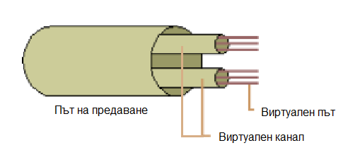

Виртуални пътища и канали
Основата за комутиране на ATM е пътят на предаване към виртуален път към йерархията на виртуалния канал. ATM може да комутира клетки на ниво път на предаване, виртуален път и виртуален канал и за да се разбере как АТМ предава информацията през мрежата, първо трябва да се обяснят основните неща, които са илюстрирани на Фиг. 1.5: 
Фиг. 1.5 Виртуални канали и пътища в предавателната среда
- Път на предаване - Пътят на предаване се състои от физически кабел, свързан към конкретен порт на ATM комутатор. Кабелът има определена честотна лента, като 155 мегабита в секунда за оптична връзка с оптични влакна (Optical Carrier-3).
- Виртуален път - Честотната лента на пътя за предаване е логически разделена на отделни виртуални пътища и идентифицирана с помощта на VPI в заглавната част на ATM. На всеки виртуален път се разпределя фиксирано количество честотна лента. Виртуалните пътища не променят динамично своята честотна лента извън разпределената.
- Виртуален канал - Честотната лента на виртуален път е логически разделена на отделни виртуални канали, използвайки идентификатор на виртуален канал също в заглавната част на ATM. За разлика от виртуалните пътища, виртуалните канали споделят динамично честотната лента във виртуален път.
Комутиране
На ниво път на предаване
Комутирането на ниво път на предаване позволява на ATM комутатор да определи кой изходен порт да използва за препращане на клетката.
На ниво виртуален път
Комутирането на ниво виртуален път позволява на цели групи от виртуални канали да се комутират едновременно. Комутирането на виртуален път е
подобно на Комутирането с кръстосана връзка (cross-connect) на телефонната система на цели групи телефонни разговори въз основа на кода на района на телефонния номер.
Комутирането става въз основа на кода на областта, а не на 7-цифрения индивидуален телефонен номер.
Когато извършва комутиране на виртуален път, ATM комутаторът разглежда само идентификатора на виртуален път в заглавната част на ATM клетката.
Тази способност за игнориране на останалата част от заглавната част прави комутирането на виртуален път по-бързо от комутирането на виртуални канали.
Комутирането на виртуални пътища най-често се случва в публичните мрежи на АТМ доставчиците на услуги, тъй като това комутиране на виртуален път позволява на доставчиците
на услуги да агрегират пакети от виртуални канали по високоскоростни опорни връзки. Тези съвкупни канали създават структури на “магистрала”, много подобни на тези, използвани в телефонните мрежи.
На ниво виртуален канал
При ниво виртуален канал се позволява детайлност на комутирането и разпределението на честотната лента. Комутирането на виртуални канали наподобява на телефонно обаждане до крайното му
7-цифрено местоположение; т.е. се основава на целия VPI/VCI, точно както окончателното при телефона се основава на целия 10-цифрен телефонен номер (3-цифрен код на областта и 7-цифрен индивидуален телефонен номер).
Комутирането на ATM виртуални канали се извършва както в частни, така и в публични мрежи. Комутаторът трябва да анализира както идентификатора на виртуалния път, така и идентификатора на виртуалния канал,
за да вземе решение за комутиране.
<- Видове свързване Качество на услугата ->